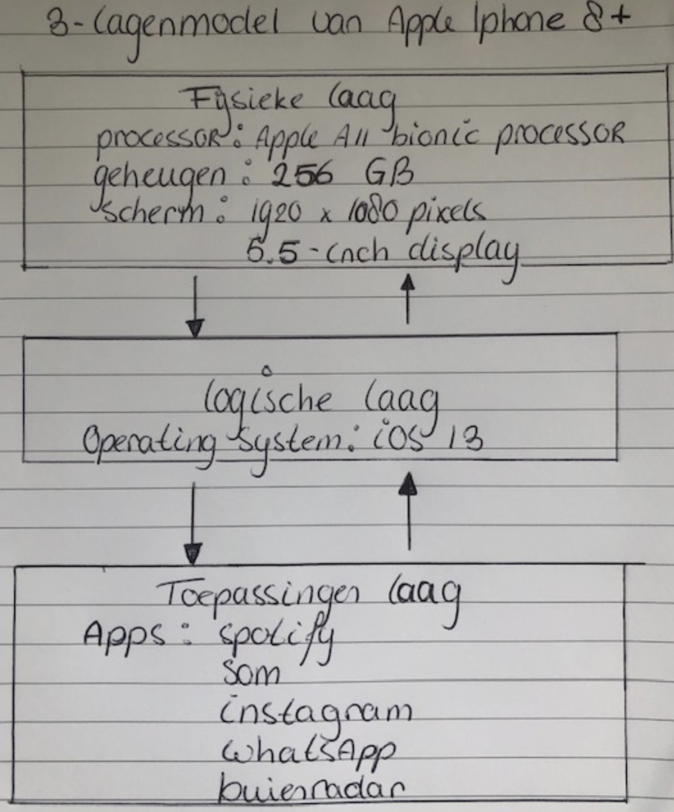

Digitale apparaten zitten propvol met hard- en software. Hardware zijn alle fysieke componenten waaruit een computer bestaat. Denk bijvoorbeeld aan het moederbord, de muis of de camera. De software bestaat uit alle programma’s en applicaties die ervoor zorgen dat een informatiesysteem goed werkt. Bijvoorbeeld het programma Word of Internet Explorer. Ook alle apps die je gebruikt op je telefoon en tablet zijn voorbeelden van software.
De hard- en software van een apparaat werken binnen ‘3 lagen’ met elkaar samen. De volgende lagen kunnen worden onderscheiden: toepassingen laag, logische laag en de fysieke laag.
- De fysieke laag bestaat uit alle hardware binnen het apparaat. Deze fysieke onderdelen zijn door middel van hardware-interfaces met elkaar verbonden, zodat communicatie mogelijk wordt gemaakt.
- De logische laag bestaat uit software die de hardware aanstuurt. De software zorgt ervoor dat toepassingen op het apparaat worden uitgevoerd. Bij een smartphone bestaat de software van de logische laag voornamelijk uit het besturingssysteem. Dit besturingssysteem stuurt de hardware aan.
- De toepassingen laag bestaat ook uit allerlei software. Deze worden toepassingen of applicaties genoemd. Denk bijvoorbeeld aan de apps die je op je telefoon kan downloaden.
